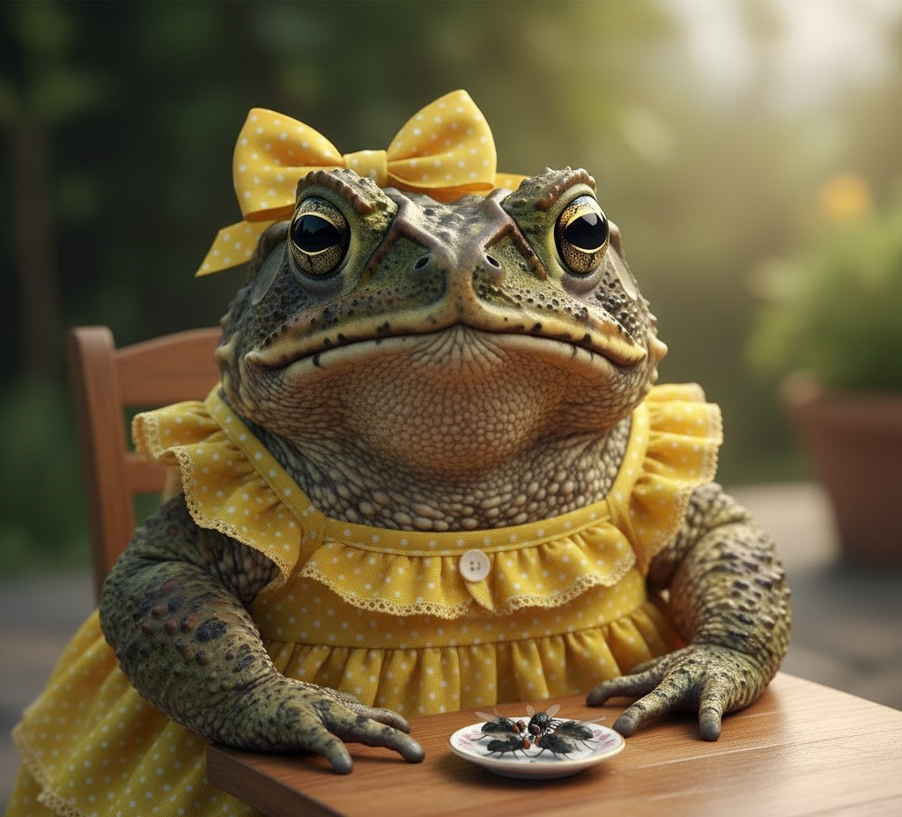

Quem somos
Somos a Cururu Vida, uma organização sem fins lucrativos dedicada à proteção, reabilitação e reinserção dos sapos-cururu (Rhinella marina) em seus habitats naturais. Nossa missão é garantir que esses incríveis anfíbios — muitas vezes injustamente temidos ou mal compreendidos — tenham a chance de retornar à natureza de forma segura e saudável.
Fundada em 2018 por biólogos, veterinários e ambientalistas, a Cururu Vida nasceu do resgate de um sapo cururu ferido. Desde então, transformamos esse gesto em um projeto contínuo de cuidado, pesquisa e educação ambiental.
Fale conosco
Rua das Flores, 235B - Bairro: Samambaias - São Paulo
Telefone: (11) 98754-5632
Email: Salveumcururu@alegria.com